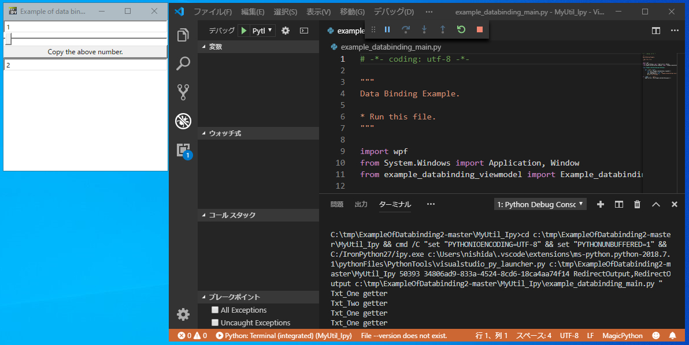

11th September 2021 at 11:22pm
IronPythonスクリプト上で、WPF + XAML + MVVMパターンの続きです。
今回は、INotifyPropertyChangedインターフェースとICommandインターフェースを実装したクラスをC#のライブラリで作成します。
こちらのサンプルプログラムを使って説明しますので、[Code] -> [Download ZIP]からzipファイルをダウンロードしてください。
ダウンロードしたファイルについて
- example_databinding_main.py
- IronPythonでデータバインディングをデモを実行するスクリプトです。
- MyUtil.sln
- INotifyPropertyChangedインターフェースとICommandインターフェースを実装したクラスを作成するソリューションです。
ビルド～スクリプトの実行
MyUtil.slnを、Visual Studioで開いてください。- 作成は2015で行いました。恐らく、2017や2019でも大丈夫だと思います。
- ビルドしてください。
- 64ビットのdllが作成されます。
- Visual Studio Codeで
DebugもしくはReleaseフォルダを開いて、example_databinding_main.pyを実行してください。- スクリプトの実行方法は、「IronPythonのスクリプトをVisual Studio Codeで実行する方法」を読んでください。
.vscode\settings.jsonのpythonPathを適切に設定することを忘れないでください。
- スクリプトの実行方法は、「IronPythonのスクリプトをVisual Studio Codeで実行する方法」を読んでください。
正常に動作すると以下のようなダイアログが表示されます。

ポイント
1. dllの読込み
ViewModelであるexample_databinding_viewmodel.pyにおける、C#のライブラリを読み込みは以下の通りです。
import clr
clr.AddReferenceToFile("MyUtil.dll")
from MyUtil import BindableBase
from MyUtil import DelegateCommand2. スライダーとテキストボックスのバイディング
今回は、スライダーとテキストボックスの値がバインディングされています。
XAMLファイルにおける以下の部分で設定しています。
<TextBox Name="txtOne"
Text="{Binding Path=Txt_One, Mode=TwoWay, UpdateSourceTrigger=PropertyChanged}" />
<Slider Value="{Binding ElementName=txtOne, Path=Text, Mode=TwoWay, UpdateSourceTrigger=PropertyChanged}"
Minimum="0" Maximum="100" />テキストボックスに"txtOne"という名前を付けます。
スライダーは、オブジェクト要素"txtOne"のTextの値を、自分自身（スライダー）のValueと結びつけます。
3. プロパティの初期値について
スライダーとテキストボックスがバインディングされていますので、スライダーで値を簡単に変えることができます。
# Txt_One property.
_Txt_One = 1.0ViewModelの「1.0」を、「1」にしたり、「"1"」にすると挙動が変わります。 変換できないような数値がテキストボックスに入力されると、テキストボックスが赤く縁どられます。
「_Txt_One = 1.0」を「_Txt_One = 1」にすると、小数点のある数値はNGになります。
# Txt_One property.
_Txt_One = 1ひとこと
一般的に使う関数やクラスはC#のライブラリにして、気軽に変更したい部分をIronPythonで作成するのが、個人的には良いと思います。C#のライブラリなら、当然C#でも使えるというメリットもあります。